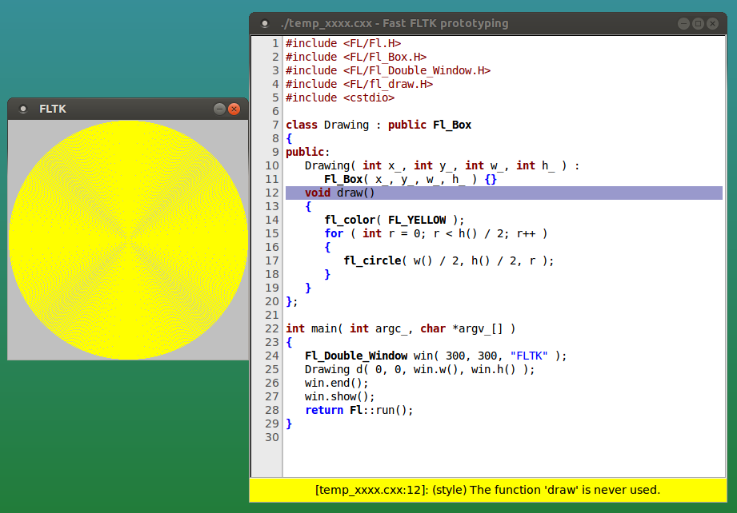

v0.2: 2018/01/20

A simple proof of concept of an idea how to "rapid prototype"
a single source FLTK application using FLTK itself as an IDE.
Opens an editor widget, where you can type a FLTK source code,
which is live compiled and executed during typing. In case of
compiler errors, the first error is displayed in a box below
the edit field and the source line highlighted.
Also a style check command is executed (default: cppcheck), after
compilation succeeded and the first style error is displayed in
the box below.
Features:
FLTK keywords are syntax highlighted additionaly to cxx keywords.Ctrl-mousewheel up/downThe envisioned use cases are:
FLTK novice makes first steps with FLTK writing some simple test programsFLTK advanced user wants to rapidly code the basic outline of a new ideaFLTK program and has immediate feedback for audienceThe envisioned work procedure is:
FLTK installed systemwide or have a global fltk_fast_proto.prefs config file
where the location of fltk-config is specifiedfast_proto and live create your FLTK programTested on Linux only.
Made compilable for Windows (using mingw) too, but not tested (probably will need additional work).